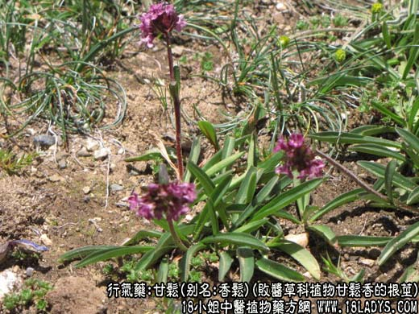
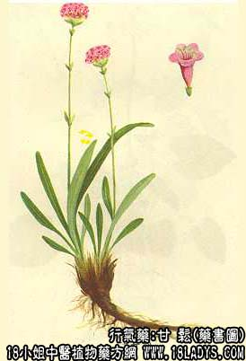

原文连接:https://www.daquan.com/post/2164.html



甘松为少常用中药。始载《开宝本草》。
别名：香松。
来源：为败酱草科植物甘松香的根茎。均为野生。商品中以川甘松香气浓者为佳。
产地：主产于四川阿坝藏族自治州松潘、南坪。此外，青海等地亦产。
性状鉴别：干燥的根茎弯曲如虾，上粗下细，长约5~13厘米。表面皱缩呈棕褐色，常裂成片状，中心木质部灰棕色，老根下部为单一中柱，而上部2~4个分体中柱。体轻泡。有特殊的浓郁的香气，味甘而略带苦。
以身干、主根肥壮、气芳香、味浓，条长无杂质者为佳。
主要成分：根茎含马兜铃烯-1（10）-2——酮、甘松酮、德比酮、缬草酮、甘松新酮、广藿香醇等。
功效与作用：甘松有理气止痛之功。
1、有镇静中枢作用，并具有一定的安定作用，以乙醇提取物效力最高。大剂量则有毒，1.5/k～3.75/kg可致死。
2、甘松并有抗心律不整的作用，具有一般较安全的药物。对异位性室性节律的抑制，强于奎尼丁及甘松挥发油。但对洋地黄引起的室性心律不整，无保护作用。
3、甘松对平滑肌有直接作用；在给豚鼠喷射组织的胺前、后，应用甘松可使支气管扩张。醇提取物在离体平滑肌器官（大肠、小肠、子宫、支气管），具有拮抗组织胺及乙酰胆碱的作用，还能拮抗氯化钡引起的痉挛。
炮制：切段、生用。
性味：甘、温。
归经：入脾、胃经。
功能：理气止痛，醒脾健胃。
主治：诸风脾郁、腹胀痛、风疳、癔病、脚气、痔漏。
临床应用：甘松醒脾畅胃之药，治心腹卒痛，消脘腹胀满，皆取温香行散之意。其气芳香，入脾胃药中，大有扶脾顺气，开胃消食之功。
1、治老人脾虚不食，久泻虚脱，常与当归、白芍等配伍，有温而不燥，甘而不滞之功，治脾阳虚，可与三柰配伍同用。
2、治霍乱转筋，甘松为必要之药，可与附片、黄连、吴茱萸等配伍，治真寒霍乱，极有捷奏之效。
使用注意：气虚血热者忌服。
用量：2~4.5g；或入丸、散。外用：泡水含漱或煎水洗患处。
处方举例：1、香松汤（《普济方》）治湿脚气，收湿拔毒；甘松、荷叶心、藁本。三味煎汤洗之。
2、治神经性胃痛及各种肠胃疼痛（《四川中药志》）：甘松香、木香、香附、沉香。煎水服。
3、治癔病，神经衰弱，肠胃痉挛等，江西（《中草药学》）：甘松18g，广皮4.5g，水500毫升，浸于热水中三小时（每半小时内煮沸一次）。分十二次服，日服六次。
注：云南亦产一种甘松，为同属植物大花甘松香，与甘松的区别为：植物较矮，花茎一般高15~20厘米；叶较宽，呈倒披针形或椭圆状披针形；花较大；花萼亦大，子房被毛。生药形状与上种相似，但较粗大，长约13厘米，直径约1.5厘米，基生叶残茎多，多呈纤维状，呈灰棕色；根茎较长，四棱形，常数个连在一条主根上，香气较弱。质量较差，故使用不广。